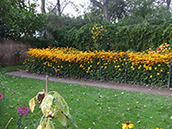
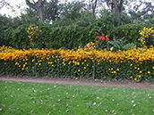
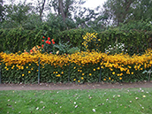
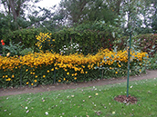
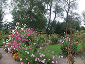

|  |  |  |  |
|  |
"Blomsternes farver havde en uimodståelig tiltrækningskraft på mig", noterede Emil Nolde i sin biografi, "jeg elskede farvernes renhed." Overalt, hvor Nolde bosatte sig, anlagde han blomsterhaver. Flytningen til Seebüll i 1927 markerede atter en ny start for Nolde. "Der var kun nøgne grønne marker omkring huset. Et sådant stykke græsmark skulle blive til vor have. En hård begyndelse, men det måtte bare lykkes." Nolde lagde et princip med bogstaverne A og E (for Ada og Emil) til grund for sin haveudformning. Stierne gennem blomsterhaven oven over dammen tegner dette bogstavmønster. Siddende foran staudebedene i sin have lavede Nolde mange blomsterakvareller. Blomsterbillederne i olie malede han derimod i sit atelier. Haven og store dele af dens beplantning fremstår endnu i dag som på Noldes tid.